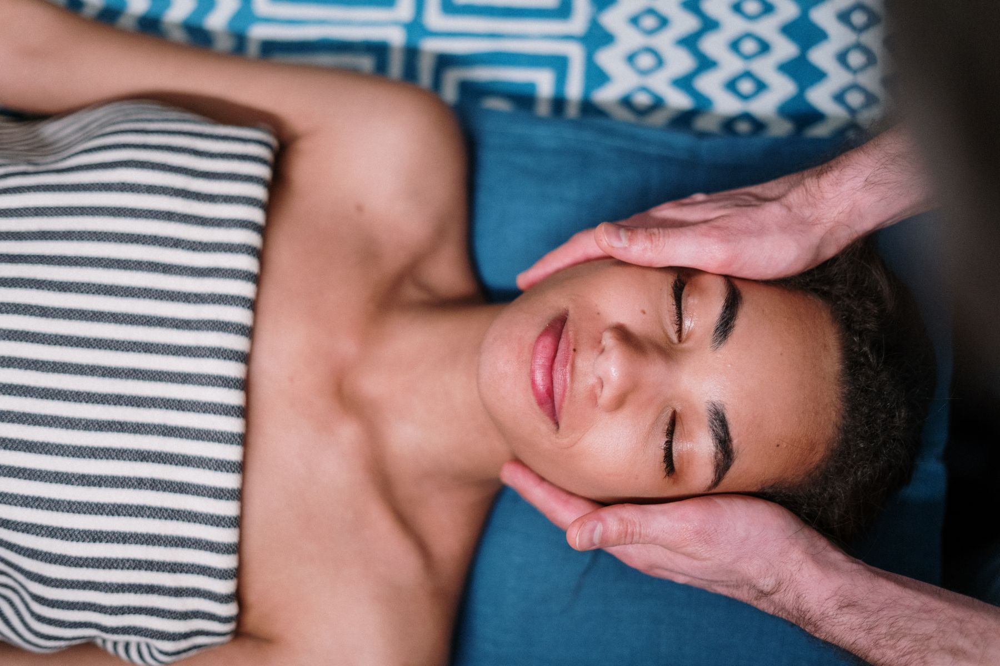

Kıl tekniğine yakın, seyrekliği tamamlayan bir işçilik. Renk, teninize göre seçilir.
Ana Sayfa · Güzellik
Çizgi, çerçeve, pürüzsüzlük
Kalıcı makyaj, kaş-kirpik ve lazer. Üçü de aynı ilkeden beslenir: doğal durmak.
Kalıcı makyaj
Yüzünüzün kendi çizgisi
Kirpik diplerini belirginleştiren ince bir hat. Kalın eyeliner etkisi hedeflenmez.
Kendi dudak renginizden bir ton içeride, solukluğu dengeleyen bir uygulama.

Kaş & kirpik
Çerçeveyi toparlamak
Kaş kıllarını yukarı ve aynı yöne yatıran, makyajsız günlerde de duran bir şekil.
Kirpikleri kıvırıp daha açık gösteren bakım. Takma kirpik hacmi değildir.
Lazer epilasyon
Bölge bölge, acele etmeden
Üst dudak, çene ve favori. Cilt tonu ve hassasiyet önceden konuşulur.
En sık başlanan bölge. Aralıklar cildin tepkisine göre ayarlanır.
Tüm kol, yarım bacak veya tüm bacak. Konfor için tempo birlikte belirlenir.
Sınır, sizin tarifinizle çizilir. Mahremiyet ve hijyen önceliklidir.
Lazer bir tıbbi vaat değildir. Seans sayısı cilt ve kıl yapısına göre değişir; ilk görüşmede gerçekçi bir aralık konuşulur.
Güzellik